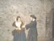

A Prisoner's Story

My name is Mary Collins. I am seventeen years old. I live in Blarney. It is the year 1846. The potato crop has failed again for the second year. One day, while coming home from work, I found a shilling on the ground. I picked it up and I was arrested. I was brought in front of the judge and I was sentenced to three months hard labour because I picked it up and was going to keep it for myself and my family. The judge said I should not have put it in my pocket.
When I reached the prison I was brought around to the back gate. They took all my clothes and put powder over me to kill the fleas and the lice on my body. The matrons gave me a black suit to wear and a piece of rag to tie up my hair. I came to the West wing and they put me on a weighing scale. I weighed five stone. The guard told me I would be fed. It was a horrible thing called "Gruel".
I went past some cells and this is what I saw. I saw a man in a cell on his own. Secondly I saw a girl lying down asleep with three or four people. Then I came to something that was a disgrace. It was a girl with a newborn baby in a room full of people.
I reached my cell. There was one girl in it. The girl in my cell was Countess Markievicz. We had two beds to sleep on. The morning came and we got up. I heard one of the prisoners crying for mercy. The arder said "If you don't move, that will be you screaming". I moved along quietly and didn't make a sound. After breakfast I was told to come outside. Someone was being hung. I couldn't bear to watch, but they made us all line up and watch.
After it was over I found two sandwiches on the ground. I picked them up and ate them. The next day I was late for breakfast. The warder brought me to the governor. "If it happens again you will be flogged," he said. I was exhausted but later that day I had to exercise for two hours. I walked two paces behind the person in front of me. We walked around and around the courtyard in a circle. I could not keep up so I was whipped several times. The governor said, "One more wrong step and you're a goner."
Two days before I was due to be released they weighed me. Iwas five and a half stone. I had put on some weight. The governor sid that I had tbeen too well fed so he told the warders that I was to starve for my last few days. I dedn't mind because I knew that I was getting out of this place soon.
~Previous~ ~Home~ ~Next~